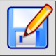
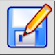
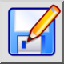
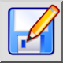

Zapisz jako...
Pasek narzędziowy / ikona:
 

Menu: Plik > Zapisz jako...
Skrót: Ctrl+Shift+S (Mac: ⇧⌘S)
Polecenia: saveas
Jest to tłumaczenie automatyczne.
Pasek narzędziowy / ikona:
 

Menu: Plik > Zapisz jako...
Skrót: Ctrl+Shift+S (Mac: ⇧⌘S)
Polecenia: saveas
Zapisuje bieżący rysunek jako nowy plik. Wyświetlone okno dialogowe pozwala również wybrać format i wersję formatu, której chcesz użyć do zapisania pliku.